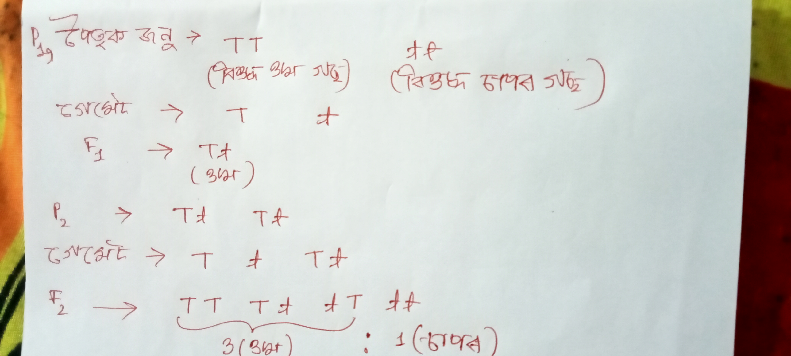
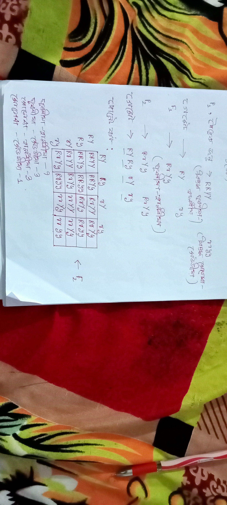

১. বংশগতিৰ সংজ্ঞা আৰু পিতৃপুৰুষ (Definition and Father of Heredity)
বংশগতি (Heredity): যি জৈৱিক প্ৰক্ৰিয়াত মাক-দেউতাক বা পিতৃ-মাতৃৰ বৈশিষ্ট্যসমূহ (ৰূপ, গুণ, স্বভাৱ আদি) বংশানুক্ৰমে সন্তান-সন্ততি বা অপত্যলৈ (Offspring) সঞ্চাৰিত হয়, তাকে বংশগতি বোলে।
বংশগতি বিজ্ঞানৰ পিতৃ (Father of Genetics): গ্ৰেগৰ যোহান মেণ্ডেলক (Gregor Johann Mendel) বংশগতি বিজ্ঞানৰ পিতৃ বুলি জনা যায়। তেওঁ মটমাহ গছৰ ওপৰত পৰীক্ষা চলাই বংশগতিৰ সূত্রসমূহ আৱিষ্কাৰ কৰিছিল।
২. প্ৰজনন ৰ সময়ত একত্ৰীকৰণ হোৱা প্ৰকাৰণ বা ভিন্নতা- কি আৰু কিয় হয়? (Accumulation of Variation during Reproduction)
কিয় হয়? (Why?): DNA (Deoxyribonucleic Acid) প্ৰতিলিপিকৰণৰ (DNA Copying) সময়ত কিছুমান ৰাসায়নিক ত্ৰুটি বা পৰিৱৰ্তন ঘটে। ইয়াৰ ফলত অপত্য জীৱৰ দেহৰ গঠনে পিতৃ-মাতৃৰ দৰে হুবহু একে নহৈ অলপ বেলেগ বা পৃথক ৰূপ লয়। এই পাৰ্থক্য বা ভিন্নতাক প্ৰকাৰণ (Variation) বোলে।
যৌন প্ৰজনন আৰু প্ৰকাৰণ: যৌন প্ৰজনন প্ৰক্ৰিয়াত দুটা বেলেগ বেলেগ জীৱৰ জননকোষৰ মিলন ঘটে, যিয়ে প্ৰকাৰণৰ মাত্ৰা আৰু অধিক বৃদ্ধি কৰে।
গুৰুত্ব আৰু উদাহৰণ:
- প্ৰকাৰণ ৰ জৰিয়তে জীৱই পৰিৱেশৰ পৰিৱৰ্তনৰ লগত খাপ খুৱাই জীয়াই থাকিব পাৰে।
- উদাহৰণ: উষ্ণতা বৃদ্ধিৰ প্ৰতি সহনশীল বেক্টেৰিয়াই গৰম পানীত জীয়াই থকাৰ ক্ষমতা লাভ কৰে, যিটো প্ৰকাৰণ ৰ ফলতেই সম্ভব হয়।
৪. DNA, ক্ৰ’ম’জম, জিন আৰু এলিল (DNA vs Chromosome vs Gene vs Alleles)
এইবোৰৰ সৰল আৰু স্পষ্ট ব্যাখ্যা তলত দিয়া হ’ল:
- DNA (Deoxyribonucleic Acid): আমাৰ শৰীৰৰ কোষৰ কেন্দ্ৰকত থকা এক দীঘল জৈৱ ৰাসায়নিক অণু, যিয়ে পিতৃ-মাতৃৰ পৰা সন্তানলৈ বংশগত গুণসমূহ (Traits) কঢ়িয়াই নিয়ে।
- ক্ৰম'জম (Chromosome): কোষৰ নিউক্লিয়াছৰ ভিতৰত থকা DNA আৰু প্ৰটিনৰ (হিষ্ট’ন) দ্বাৰা গঠিত সূতা সদৃশ ঘূৰণীয়া বা পিয়লা আকৃতিৰ গঠন, যিয়ে DNA ক সুৰক্ষিতভাৱে বান্ধি ৰাখে। সহজ কথাত ক’বলৈ গ’লে, DNA খিনি পাক খাই ক্ৰম'জমৰ সৃষ্টি কৰে।
- জিন (Gene): DNA ৰ এটা নিৰ্দিষ্ট অংশ বা খণ্ড, যিয়ে একোটা বিশেষ চৰিত্ৰ বা প্ৰটিন নিয়ণ্ট্ৰণ কৰে। জিনক বংশগতিৰ প্ৰকৃত একক বা বাহক বোলা হয়।
- এলিল (Alleles): এটা নিৰ্দিষ্ট জিনৰ বিপৰীত বা ভিন্ন ৰূপ (যেনে: দীঘল গুণৰ বাবে 'T' আৰু চাপৰ গুণৰ বাবে 't')।
৫. মেণ্ডেলৰ একসংকৰন পৰীক্ষা (Mendel's Monohybrid Cross)
সংজ্ঞা: কেৱল এটা মাত্ৰ বিপৰীত ধৰ্মী চৰিত্ৰৰ (যেনে গছৰ উচ্চতা: ওখ আৰু চাপৰ) মাজত কৰা সংকৰণক (জনন) একসংকৰণ বোলে।
পৰীক্ষাৰ বিৱৰণ: মেন্দেলে এটা বিশুদ্ধ ওখ মটমাহ গছ (TT) আৰু এটা বিশুদ্ধ চাপৰ মটমাহ গছ (tt) বাছি লৈ সিহঁতৰ মাজত কৃত্ৰিমভাৱে পৰাগযোগ বা সংকৰণ কৰাইছিল।
- প্ৰথম অপত্য প্ৰজন্ম (F1 Generation): এই সংকৰণৰ ফলত উৎপন্ন হোৱা প্ৰথম প্ৰজন্মৰ আটাইকেইটা গছেই ওখ (Tt) হৈছিল। ইয়াত চাপৰ গুণটো প্ৰকাশ পোৱা নাছিল, যিটো মেন্দেলে লক্ষ্য কৰিছিল।
- দ্বিতীয় অপত্য প্ৰজন্ম (F2 Generation): যেতিয়া F1 প্ৰজন্মৰ গছবোৰৰ মাজত স্ব-প্ৰজনন (Self-pollination) কৰোৱা হ’ল, তেতিয়া দ্বিতীয় প্ৰজন্মত আকৌ ওখ আৰু চাপৰ দুয়োবিধ গছেই ঘূৰি আহিল। পৰীক্ষাটোত দেখা গ’ল যে মুঠ গছবোৰৰ প্ৰায় তিনিভাগ ওখ আৰু একভাগ চাপৰ হৈছে অৰ্থাৎ ফিনোটাইপ অনুপাত ৩ : ১ হ’ল।
ফলাফল আৰু অনুপাত:
- জিনোটাইপ অনুপাত (Genotypic Ratio): TT : Tt : tt = 1 : 2 : 1 (যিটো জিনীয় গঠন বুজায়)
- ফিনোটাইপ অনুপাত (Phenotypic Ratio): ওখ : চাপৰ = 3 : 1 (যিটো বাহ্যিক ৰূপ বা প্ৰকাশভংগী বুজায়)

৬. মেণ্ডেলৰ দ্বি-সংকৰন জনন পৰীক্ষা (Mendel's Dihybrid Cross)
সংজ্ঞা: একেলগে দুটা বিপৰীত ধৰ্মী চৰিত্ৰক (যেনে গছৰ বীজৰ আকৃতি: ঘূৰণীয়া বা সোঁতোৰা; আৰু বীজৰ ৰং: হালধীয়া বা সেউজীয়া) লৈ কৰা সংকৰণক দ্বি-সংকৰণ জনন বোলে।
পৰীক্ষাৰ সাৰাংশ: মেন্দেলে এটা বিশুদ্ধ ঘূৰণীয়া - হালধীয়া বীজযুক্ত গছ (RRYY) আৰু এটা সোঁতোৰা - সেউজীয়া বীজযুক্ত গছৰ (rryy) মাজত সংকৰণ ঘটাইছিল।
- F1 প্ৰজন্ম: এই সংকৰণৰ ফলত প্ৰথম অপত্য প্ৰজন্মত উৎপন্ন হোৱা আটাইকেইটা বীজেই ঘূৰণীয়া - হালধীয়া হ’ল, যিটোৱে প্ৰকাশ কৰে যেঘূৰণীয়া -হালধীয়া গুণ দুটা প্ৰভাৱী (Dominant)।
- F2 প্ৰজন্ম: F1 গছবোৰৰ মাজত স্ব-প্ৰজনন ঘটোৱাত দ্বিতীয় অপত্য প্ৰজন্মত ৪ ধৰণৰ সংমিশ্রণ বা phenotypes পোৱা গ’ল।
ফিনোটাইপ অনুপাত (Phenotypic Ratio): 9 : 3 : 3 : 1
অৰ্থাৎ:
- ৯ টা বীজ - ঘূৰণীয়া - হালধীয়া
- ৩ টা বীজ - ঘূৰণীয়া - সেউজীয়া
- ৩ টা বীজ - সোঁতোৰা - হালধীয়া
- ১ টা বীজ - সোঁতোৰা - সেউজীয়া

চিত্র: দ্বি-সংকৰণ জননৰ পানেট বৰ্গ (Punnet Square)
৭. মেণ্ডেলৰ বংশগতিৰ সূত্ৰসমূহ (Mendel's Laws of Heredity)
ক) প্ৰভাৱিতাৰ সূত্ৰ (Law of Dominance): একসংকৰ জননৰ ফলাফলৰ ভিত্তিত কোৱা হয় যে এযোৰ বিপৰীত চৰিত্ৰৰ মাজত সংকৰণ ঘটালে F1 প্রজন্মত কেৱল প্ৰভাৱী গুণটোহে প্ৰকাশ পায় আৰু প্ৰভাৱী গুণটো লুকাঁই থাকে।
খ) পৃথকীকৰণৰ সূত্ৰ (Law of Segregation): জননকোষ (Gametes) সৃষ্টি হোৱাৰ সময়ত চৰিত্ৰ নিয়ন্ত্ৰণ কৰা কাৰক বা এলিলবোৰ পৰস্পৰ পৃথক হৈ যায় আৰু প্ৰতিটো জননকোষে মাত্ৰ এটা কৈ কাৰক লাভ কৰে।
গ) স্বতন্ত্ৰ সঞ্চাৰণৰ সূত্ৰ (Law of Independent Assortment): দ্বি-সংকৰ জননৰ ওপৰত ভিত্তি কৰি কোৱা হয় যে দুটা বা ততোধিক চৰিত্ৰৰ জিনবোৰ একেলগে থাকিলেও সিহঁতে পৰস্পৰৰ ওপৰত নিৰ্ভৰ নকৰাকৈ স্বাধীনভাৱে যিকোনো সংমিশ্ৰণত অপত্যলৈ সঞ্চাৰিত হ'ব পাৰে।
৮. মানুহৰ লিংগ নিৰ্ধাৰণ (Sex Determination in Humans)
মানুহৰ প্ৰতিটো কোষত ২৩ যোৰ অৰ্থাৎ ৪৬ টা ক্ৰ’ম’জম থাকে। ইয়াৰ ভিতৰত ২২ যোৰ ক্ৰ’ম’জমক অটোচ’ম (Autosomes) বোলে যিয়ে শাৰীৰিক বৈশিষ্ট্য নিৰ্ধাৰণ কৰে, আৰু ১ যোৰ (সাঁচি বা ২ টা ক্ৰ’ম’জম) হল লিংগ ক্ৰ’ম’জম বা জনন কোষ (Sex Chromosomes)।
- নাৰীৰ ক্ষেত্ৰত: দুয়োটা ক্ৰ’ম’জম একেধৰণৰ অৰ্থাৎ XX।
- পুৰুষৰ ক্ষেত্ৰত: এটা দীঘল X আৰু এটা সৰু Y ক্ৰ’ম’জম থাকে, অৰ্থাৎ XY।
লিংগ নিৰ্ধাৰণ প্ৰক্ৰিয়া: মাকৰ ফালৰ পৰা সদায় X ক্ৰ’ম’জমযুক্ত ডিম্বাণু আহে। পিতৃৰ ফালৰ পৰা অহা শুক্ৰাণু দুবিধ হ'ব পাৰে— এটা X ক্ৰ’ম’জমযুক্ত আৰু আনটো Y ক্ৰ’ম’জমযুক্ত।
- যদি X ক্ৰ’ম’জমযুক্ত শুক্ৰাণুৱে ডিম্বাণুক নিষেচন কৰে, তেন্তে জন্ম হ'ব লগা সন্তানটো ছোৱালী হ'ব (XX)।
- যদি Y ক্ৰ’ম’জমযুক্ত শুক্ৰাণুৱে ডিম্বাণুক নিষেচন কৰে, তেন্তে জন্ম হ'ব লগা সন্তানটো ল'ৰা হ'ব (XY)।
পুৰুষৰ (XY) আৰু মহিলাৰ (XX) মিলনৰ দ্বাৰা পুত্ৰ বা কন্যা সন্তান জন্ম হোৱাৰ সম্ভাৱনা সদায় ৫০%-৫০% হয়।
৯. প্ৰজাতিৰ সংজ্ঞা আৰু উদাহৰণ (Definition of Species with Examples)
সংজ্ঞা: একে সাদৃশ্য থকা আৰু প্ৰাকৃতিক পৰিৱেশত পৰস্পৰৰ মাজত প্ৰজনন কৰি উৰ্বৰ (Fertile) সন্তান জন্ম দিব পৰা জীৱৰ সমষ্টিক বা গোটক প্ৰজাতি (Species) বোলে।
- উদাহৰণ: মানুহ (homo sapiens), কুকুৰ, মেকুৰী, বাঘ আদি প্ৰতিটোৱে একোটা সুকীয়া প্ৰজাতি।
১০. নতুন প্ৰজাতিৰ উৎপত্তি বা প্ৰজাতিকৰণ - কি আৰু কিয় হয়? (Speciation: Why and How it Occurs)
প্ৰজাতিকৰণ(Speciation): পূৰ্বৰ এটা বা একাধিক প্ৰজাতিৰ পৰা পৰিৱৰ্তন ঘটি নতুন প্ৰজাতিৰ সৃষ্টি হোৱাকে প্ৰজাতিকৰণ বোলে।
কিয় আৰু কেনেকৈ হয়? (Why and How?):
- ভৌগোলিক পৃথকীকৰণ (Geographical Isolation): নদী, পাহাৰ বা বনাঞ্চলৰ দ্বাৰা একে প্ৰজাতিৰ জীৱবোৰ দুটা ভাগত বিভক্ত হৈ পৰিলে সিহঁতৰ মাজত প্ৰজনন বন্ধ হৈ যায়।
- জিনীয় প্ৰবাহ বন্ধ হোৱা (Genetic Drift & Natural Selection): দীঘলীয়া সময় ধৰি পৃথক হৈ থকাৰ ফলত দুয়োটা গোটৰ মাজত ক্ৰমে প্ৰকাৰণ একত্ৰীকৰণ হয় আৰু জিনীয় গঠন বেলেগ হৈ পৰে।
- শেষত সিহঁত ইমানেই ভিন্ন হৈ পৰে যে দুয়োটা গোটৰ মাজত পুনৰ প্ৰজনন ঘটিলেও উৰ্বৰ সন্তান উৎপন্ন কৰিব নোৱাৰে, ফলত নতুন প্ৰজাতিৰ সৃষ্টি হয়।
১১. জীৱৰ ক্ৰমবিকাশ বা বিবৰ্তন -এক উদাহৰণ (Evolution: An Illustration at Class 10 Level)
ক্ৰমবিকাশ (Evolution): সৰল আৰু আদিম জীৱৰ পৰা ক্ৰমান্বয়ে দীঘলীয়া সময়ৰ ব্যৱধানত পৰিৱৰ্তিত হৈ জটিল আৰু নতুন প্ৰজাতিৰ জীৱ সৃষ্টি হোৱা মন্থৰ প্ৰক্ৰিয়াক ক্ৰমবিকাশ বোলে।
উদাহৰণ (গুবৰুৱা):
- এটা ৰঙা ৰঙৰ গুবৰুৱাৰ মাজত এটা সেউজীয়া ৰঙৰ গুবৰুৱা (Variation) জন্ম হ’ল। কাউৰীয়ে (Crows)-এই ৰঙা গুবৰুৱা বোৰ সহজে দেখি খাই পেলালে, কিন্তু সেউজীয়া গুবৰুৱা ঘাঁহনিৰ সেউজীয়া ৰংৰ লগত মিলি যোৱাৰ বাবে ৰক্ষা পৰিল। ফলত ক্ৰমে সেউজীয়া গুবৰোৱা সংখ্যা বাঢ়ি গ’ল। ইয়ে দেখুৱায় যে প্ৰাকৃতিক নিৰ্বাচনে (Natural Selection) ক্ৰমবিকাশত সহায় কৰে।
১২. ক্ৰমবিকাশ কিয় আৰু কেনেকৈ ঘটে? (How and Why Evolution Occurs)
- কিয় ঘটে? পৰিৱেশৰ পৰিৱৰ্তনৰ লগত খাপ খুৱাই জীয়াই থাকিবলৈ আৰু নিজৰ বংশ ৰক্ষা কৰিবলৈ জীৱৰ দেহৰ গঠন আৰু জিনত পৰিৱৰ্তন আৱশ্যক হয়।
- কেনেকৈ ঘটে? জনন প্ৰক্ৰিয়াত DNA প্ৰতিলিপিকৰণত হোৱা ত্ৰুটি (Variation), জিনীয় বিচ্যুতি (Genetic Drift), আৰু প্ৰাকৃতিক নিৰ্বাচনৰ (Natural Selection) মাধ্যমেৰে ক্ৰমবিকাশ ঘটে।
১৩. চাৰ্লছ ডাৰউইনৰ ক্ৰমবিকাশৰ মতবাদ আৰু তেওঁৰ পুথি (Darwin's Theory of Evolution and His Book)
ডাৰউইনৰ পুথিৰ নাম: চাৰ্লছ ডাৰউইনে (Charles Darwin) ১৮৫৯ চনত প্ৰকাশ কৰা বিখ্যাত পুথিখনৰ নাম হ'ল— "On the Origin of Species" (প্ৰজাতিৰ উৎপত্তি)।
ডাৰউইনৰ মতবাদৰ মূল কথাসমূহ:
- প্ৰতিটো জীৱই প্ৰচুৰ হাৰত বংশবৃদ্ধি কৰিব বিচাৰে, কিন্তু পৃথিৱীত খাদ্য আৰু বাসস্থানৰ পৰিমাণ সীমিত।
- ফলত জীৱসমূহৰ মাজত জীয়াই থকাৰ বাবে সংগ্ৰাম (Struggle for existence) হয়।
- এই সংগ্ৰামত যিবোৰ জীৱৰ শৰীৰত উপকাৰী বা অনুকূল ভিন্নতা (Favorable variations) থাকে, সেইবোৰক প্ৰকৃতিয়ে নিৰ্বাচন কৰে (Survival of the fittest)।
- উপযুক্ত গুণসম্পন্ন জীৱবোৰে জীয়াই থাকে আৰু অপত্যলৈ সেই গুণবোৰ সঞ্চাৰ কৰে, যিয়ে ক্ৰমে নতুন প্ৰজাতিৰ জন্ম দিয়ে।
১৪. জীৱৰ উৎপত্তি: মিলাৰ আৰু ইউৰিৰ পৰীক্ষা (Origin of Life: Miller and Urey Experiment)
পৰীক্ষাৰ উদ্দেশ্য: প্ৰাচীন পৃথিৱীত অজৈৱ পদাৰ্থৰ পৰা কিদৰে প্ৰথম জৈৱ অণু (যেনে এমিনো এচিড) সৃষ্টি হৈছিল, তাক পৰীক্ষাগাৰত প্ৰমাণ কৰা।
পৰীক্ষাৰ বিৱৰণ: ১৯৫৩ চনত ষ্টেনলি মিলাৰ (Stanley Miller) আৰু হেৰল্ড ইউৰিয়ে (Harold Urey) এটা কৃত্ৰিম ব্যৱস্থা তৈয়াৰ কৰিছিল:
- তেওঁলোকে এটা বন্ধ পাত্ৰত আদিম পৃথিৱীৰ বায়ুমণ্ডলৰ দৰে মিথেন (CH4), এম’নিয়া (NH3), হাইড্ৰ’জেন (H2) আৰু পানীৰ ভাপ (H2O) মিশ্ৰণ অনুপাতত ললে (কোনো অক্সিজেন নাছিল)।
- জলীয় বাষ্পৰ মাজেৰে বৈদ্যুতিক স্পাৰ্ক (Electric spark - যি আদিম পৃথিৱীৰ বজ্ৰপাতক সূচায়) প্ৰৱাহিত কৰিলে আৰু উত্তপ্ত পানী ঠাণ্ডা কৰাৰ ব্যৱস্থা ৰাখিলে।
- ফলাফল: কেইদিনমানৰ পিছত তেওঁলোকে দেখিলে যে দ্ৰৱণটোত কিছুমান সৰল এমিনো এচিড (Amino acids) সৃষ্টি হৈছে, যিবোৰ প্ৰ’টিন গঠনৰ মূল উপাদান। ইয়ে প্ৰমাণ কৰিলে যে অজৈৱ পদাৰ্থৰ পৰাই জীৱৰ মূল উপাদান সৃষ্টি হৈছিল।
১৫. ক্ৰমবিকাশ আৰু শ্ৰেণীবিভাজন (Evolution and Classification)
শ্ৰেণীবিভাজনৰ লগত ক্ৰমবিকাশৰ সম্পৰ্ক: জীৱৰ শ্ৰেণীবিভাজন মূলত যিবোৰ সাদৃশ্য আৰু পাৰ্থক্যৰ ওপৰত ভিত্তি কৰি কৰা হয়। যিমান বেছি মিল থাকে, সিমানেই ওচৰৰ সম্পৰ্কীয় বুলি ধৰা হয়।
- কেনেদৰে কৰা হয়? দুটা জীৱৰ মাজত যিমান বেছি সাধাৰণ বৈশিষ্ট্য (Common characteristics) মিলে, সিমান কম সময়ৰ আগতে সিহঁতৰ উমৈহতীয়া পূৰ্বপুৰুষ আছিল বুলি ধৰা হয়।
- উদাহৰণ: হাঁহ আৰু চিম্পাজীৰ মাজত যিমান মিল আছে, তাতকৈ বহুত বেছি মিল চিম্পাজী আৰু মানুহৰ শৰীৰৰ গঠনত (স্তন্যপায়ী প্ৰাণী হোৱাৰ বাবে) আছে। ইয়ে দেখুৱায় যে চিম্পঞ্জি আৰু মানুহৰ ক্ৰমবিকাশৰ ধাৰা একে উৎসৰ পৰা আহিছে।
১৬. সমসংস্থ অংগ আৰু সমবৃত্তি অংগ (Homologous and Analogous Organs)
| বৈশিষ্ট্য |
সমসংস্থ অংগ (Homologous Organs) |
সমবৃত্তি অংগ (Analogous Organs) |
| সংজ্ঞা |
যিবোৰ অংগৰ উৎপত্তি আৰু আভ্যন্তৰীণ গঠন একে, কিন্তু বাহ্যিক কাম বেলেগ। |
যিবোৰ অংগৰ কাম একে, কিন্তু উৎপত্তি আৰু মূল গঠন বেলেগ। |
| কি সূচায়? |
অপসাৰী ক্ৰমবিকাশ (Divergent Evolution) আৰু উমৈহতীয়া পূৰ্বপুৰুষ সূচায়(নিকট বৰ্তি আত্মীয়)। |
অভিসাৰী ক্ৰমবিকাশ (Convergent Evolution) সূচায়। |
| উদাহৰণ |
মানুহৰ হাত, চৰাইৰ ডেউকা, ঘোঁৰাৰ আগৰ ভৰি, আৰু তিমি মাছৰ ফ্লিবাৰ। |
চৰাইৰ ডেউকা আৰু পখিলাৰ ডেউকা (দুয়োটাৰে কাম উৰাত সহায় কৰা, কিন্তু গঠন বেলেগ)। |
১৭. জীৱাশ্ম বা ফচিল (Fossils) আৰু ইয়াৰ গুৰুত্ব
সংজ্ঞা: আদিম যুগৰ জীৱ-জন্তু বা উদ্ভিদৰ মৃতদেহ মাটি, শিল বা বালিৰ তলত দীঘলীয়া সময় ধৰি পুত যোৱাৰ ফলত শিলত পৰিণত হয়, তাকে জীৱাশ্ম বা ফচিল (Fossils) বোলে। জীৱাশ্ম মানে যিবোৰ থাকি যোৱা অংশ
জীৱাশ্মই পৰিৱেশ আৰু ক্ৰমবিকাশ বুজাত কেনেদৰে সহায় কৰে?
- জীৱাশ্মই অতীতৰ পৃথিৱীৰ জলবায়ু আৰু পৰিৱেশৰ অৱস্থাৰ ধাৰণা দিয়ে (যেনে: বৰফৰ তলত পোৱা শিলত পোৱা সাগৰীয় জীৱৰ ফচিল)।
- ই দেখুৱায় যে বৰ্তমান বিলুপ্ত হৈ যোৱা জীৱৰ লগত বৰ্তমানৰ জীৱৰ কি সম্পৰ্ক আছে (যেনে: আৰ্কিয়'পটেৰিক্স (Archaeopteryx) নামৰ জীৱাশ্মটোৱে সৰীসৃপ আৰু চৰাইৰ মাজৰ সংযোগৰক্ষা কৰে, যিয়ে প্ৰমাণ কৰে যে চৰাইবোৰ সৰীসৃপৰ পৰা সৃষ্টি হৈছে)। আৰু কুকুৰা ও যে dianosour ৰ প্ৰজাতি হয়।
১৮. কয়লা আৰু পেট্ৰ’লিয়ামৰ উৎপত্তি (Origin of Coal and Petroleum)
- কয়লাৰ উৎপত্তি: কোটি কোটি বছৰ আগতে পৃথিৱীৰ ডাঙৰ ডাঙৰ অৰণ্য আৰু গছ-গছনি প্ৰাকৃতিক দুৰ্যোগৰ ফলত মাটিৰ তলত পুত গৈছিল। উচ্চ উষ্ণতা আৰু প্ৰচণ্ড চাপৰ ফলত লাখ লাখ বছৰ ধৰি সেইবোৰ মন্থৰ গতিত পচি কয়লালৈ পৰিণত হৈছিল।
- পেট্ৰ’লিয়ামৰ উৎপত্তি: একেদৰে সমুদ্ৰৰ তলত বাস কৰা উদ্ভিদ আৰু ক্ষুদ্ৰ প্ৰাণীৰ মৃতদেহ মাটিৰ পলসৰ তলত জমা হৈ প্ৰচণ্ড চাপ আৰু তাপৰ প্ৰভাৱত পেট্ৰ’লিয়াম আৰু প্ৰাকৃতিক গেছলৈ ৰূপান্তৰিত হৈছিল।
১৯. জীৱাশ্মৰ বয়স নিৰ্ধাৰণ পদ্ধতি (How to Identify Age of Fossils)
জীৱাশ্মৰ বয়স বা সময়কাল নিৰ্ধাৰণ কৰিবলৈ মূলতঃ দুটা পদ্ধতি ব্যৱহাৰ কৰা হয়:
- আপেক্ষিক পদ্ধতি (Relative Method): যদি আমি মাটি খান্দি যাওঁ, তেন্তে একেবাৰে তলৰ তৰপৰ ফচিলবোৰ পুৰণি আৰু ওপৰৰ তৰৰ ফচিলবোৰ নতুন হ'ব বুলি ধৰা হয়।
- কাৰ্বন ডেটিং পদ্ধতি (Radioactive Carbon Dating - C-14): জীৱাশ্মত থকা তেজস্ক্রিয় কাৰ্বন (C-14) ৰ পৰিমাণ হ্ৰাস পোৱাৰ হাৰ জোখাৰ জৰিয়তে ফচিলটোৰ সঠিক বয়স নিৰ্ধাৰণ কৰা হয়।
২০.ক্ৰমবিকাশৰ পৰ্যায়
ক্ৰমবিকাশৰ পৰ্যায়(Evolution by Stages): ক্ৰমবিকাশ হঠাতে নহয়, বৰঞ্চ সৰল অংগৰ পৰা জটিল অংগলৈ ক্ৰমান্বয়ে স্তৰে স্তৰে ঘটে (যেনে: চকুৰ ক্ৰমবিকাশ প্ৰথমে সাধাৰণ পোহৰ সংবেদী কোষ হিচাপে আৰম্ভ হৈছিল)।
বনৰীয়া ৰন্ধা কবিৰ উদাহৰণ (NCERT): মানুহে হাজাৰ হাজাৰ বছৰ ধৰি কৃত্রিম নিৰ্বাচনৰ (Artificial Selection) জৰিয়তে এটা মাত্ৰ আদিম বন্ধাকবি (Wild Cabbage) প্ৰজাতিৰ পৰা বিভিন্ন শাক-পাচলি উৎপন্ন কৰিছে:
- বনৰীয়া বন্ধা কবিৰ পাতৰ মাজৰ দূৰত্ব কমাই বন্ধাকবি (Cabbage) বনালে।
- বনৰীয়া বন্ধা কবিৰ ফুলৰ অংশ সৰু কৰি ব্ৰকলি (Broccoli) আৰু ফুলকবি (Cauliflower) বনালে।
- বনৰীয়া বন্ধা কবিৰ ফুলবোৰ ফুলি নুঠাকৈ ৰাখি কালে (Kale) বনালে।
- বনৰীয়া বন্ধা কবিৰ ফুলৰ ফোপোকা অংশটো ডাঙৰ কৰি ওলকবি (Kohlrabi) বনালে।
২১. ক্ৰমবিকাশ বনাম প্ৰগতি (Evolution vs Progress)
ভুল ধাৰণা: বহুতৰে ধাৰণা ক্ৰমবিকাশ মানেই হ'ল নিম্ন শ্ৰেণীৰ জীৱৰ পৰা উন্নত বা "শ্ৰেষ্ঠ" জীৱলৈ ৰূপান্তৰ হোৱা (যেনে মানুহক সৰ্বশ্ৰেষ্ঠ বা শেষ পৰ্যায় বুলি ভবা)।
প্ৰকৃত সত্য: ক্ৰমবিকাশৰ কোনো নিৰ্দিষ্ট লক্ষ্য । ই কেৱল পৰিৱেশৰ লগত খাপ খুৱাই জীয়াই থকাৰ বাবে হোৱা এক ভিন্নৰূপী প্ৰক্ৰিয়া। উদাহৰণস্বৰূপে, বেক্টেৰিয়া আজিৰ তাৰিখতো কোটি কোটি বছৰ ধৰি পৃথিৱীত অতি সফলভাৱে জীয়াই আছে, যি মানুহৰ দৰেই ক্ৰমবিকাশৰ এক সফল ফল।
২২. মানুহৰ ক্ৰমবিকাশ (Evolution of Humans)
বিজ্ঞানৰ মতে মানুহ আৰু চিম্পাজীৰ (Chimpanzees) উমৈহতীয়া পূৰ্বপুৰুষ আছিল। মানুহৰ ক্ৰমবিকাশৰ মূল পৰ্যায়সমূহ:
- আমাৰ পূৰ্বপুৰুষসকল গছত বাস কৰা প্ৰাইমেট আছিল, যিবোৰ ক্ৰমে পোন হৈ দুভৰিৰে চলিবলৈ শিকিলে।
- মগজুৰ আকাৰ ক্ৰমে ডাঙৰ হ’ল, হাতৰ ব্যৱহাৰ বৃদ্ধি পালে আৰু সঁজুলি তৈয়াৰ কৰিবলৈ শিকিলে।
- আফ্ৰিকা মহাদেশত মানুহৰ আদিম ৰূপৰ উৎপত্তি হৈছিল আৰু তাৰ পিছত তেওঁলোক পৃথিৱীৰ বিভিন্ন প্ৰান্তলৈ বিয়পি পৰিছিল।
- বৰ্তমানৰ আটাইবোৰ মানুহ একেটা মাত্ৰ প্ৰজাতিৰ অন্তৰ্গত, যাৰ বৈজ্ঞানিক নাম হ'ল— Homo sapiens (হোম' চেপিয়েন্স)।